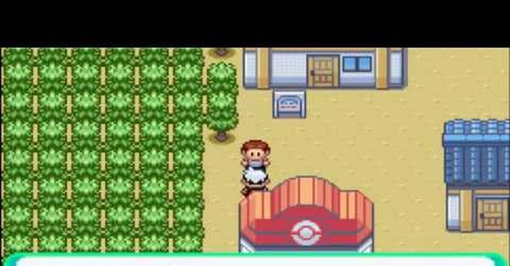
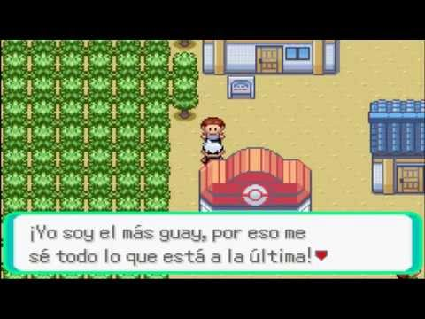
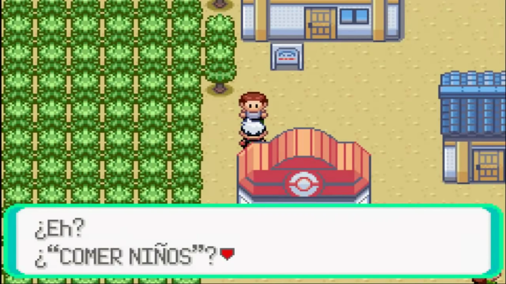

Memes de RanguGamer
Zapato. | Azul | Comer Niños

Su origen se dió en un vídeo de Pokemon Esmeralda, en el canal de RanguGamer
En un punto del juego, llegas a una pequeña isla donde, hablando con un lugareño, te preguntará que está de moda, mostrandote una lista de palabras en la que puedes escoger dos palabras sin restricción alguna

Rangu al ver esta oportunidad, escogió esas dos palabras burlandose del hecho de la falta de filtro de oraciones, quedando extrañamente bien con los dialogos del juego y causando más de una risa
